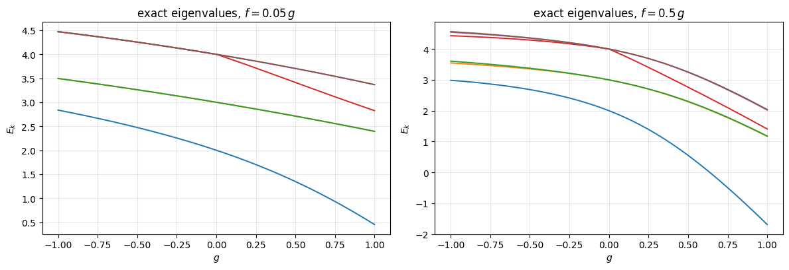
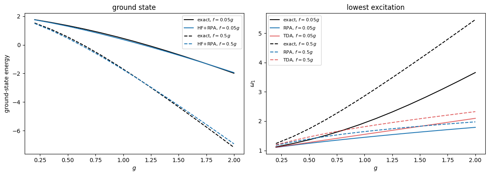
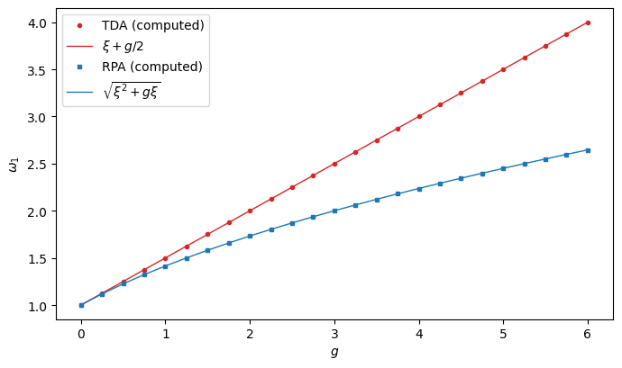
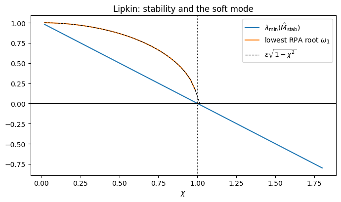
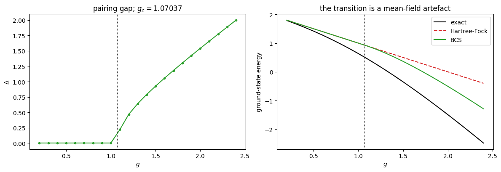
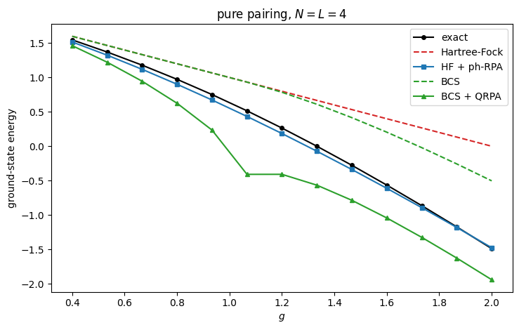

8. Mean-field applications: TDA, RPA and QRPA#
Companion notebook to Chapter 7 of Quantum mechanics for many-particle
systems. Every number quoted in the chapter is produced here; the code is
the same as in BookManybody/BookMaterial/Programs/rpa.py.
The model has \(L\) doubly degenerate, equally spaced levels \(p=1,\dots,L\) with spin \(\sigma=\pm\), holding \(N\) fermions:
At \(f=0\) this is exactly the pairing model of Chapter 4. The particle-hole term breaks pairs, which is what the pairing term cannot do.
Contents:
The model and its exact spectrum
The Hartree-Fock reference
Validating the \(A\) and \(B\) matrices
Tamm-Dancoff and RPA
RPA and the stability of the mean field
BCS
Quasiparticle RPA, the spurious mode and the mode content
Everything against everything
import sys, os
import numpy as np
import matplotlib.pyplot as plt
sys.path.insert(0, os.path.join("..", "BookManybody", "BookMaterial", "Programs"))
import rpa
np.set_printoptions(precision=6, suppress=True, linewidth=120)
8.1. 1. The model and its exact spectrum#
Exact diagonalisation is Chapter 5 applied without modification: determinants are bit strings, the Hamiltonian is built by applying each term to every basis state, and the lowest eigenvalues follow from Chapter 1’s algorithms. Restricting to the balanced \(S_z=0\) sector cuts the dimension from \(\binom{8}{4}=70\) to 36.
rpa.demo_model()
==========================================================================
1. The model, and its exact spectrum
==========================================================================
L = 4 levels, N = 4 particles
full space C(8,4) = 70
balanced S_z = 0 sector = 36
At f = 0 the model is the pairing model of chapter 4. The exact
energies must reproduce Table 4.2:
g E_ref E_0 (exact) chapter 4
-1.00 3.000000 2.77987014 2.77987014
-0.50 2.500000 2.43688426 2.43688426
0.00 2.000000 2.00000000 2.00000000
0.50 1.500000 1.41677428 1.41677428
1.00 1.000000 0.63554847 0.63554847
Switching on the particle-hole term, g = 0.5 and f = 0.05 g:
E_0 = 1.347133
E_1 = 2.710867
E_2 = 2.711098
E_3 = 3.413340
E_4 = 3.704452
E_5 = 3.704504
The particle-hole term breaks pairs, so the seniority of chapter 5
is no longer conserved and the whole S_z = 0 space is active.
gs = np.linspace(-1.0, 1.0, 41)
fig, ax = plt.subplots(1, 2, figsize=(12, 4.2))
for alpha, panel in ((0.05, 0), (0.5, 1)):
data = np.array([rpa.PairingPH(levels=4, particles=4,
g=g, f=alpha * g).spectrum(6) for g in gs])
for m in range(data.shape[1]):
ax[panel].plot(gs, data[:, m], lw=1.4)
ax[panel].set_xlabel("$g$"); ax[panel].set_ylabel("$E_k$")
ax[panel].set_title(rf"exact eigenvalues, $f = {alpha}\,g$")
ax[panel].grid(alpha=0.3)
fig.tight_layout(); plt.show()

The weak-\(f\) panel shows the near-degenerate pairs of the pairing model, split only slightly. At \(f = 0.5\,g\) the pair-breaking term reorganises the low-lying structure and levels cross.
8.2. 2. The Hartree-Fock reference#
Both approximations are built on a stationary mean field. With pure pairing the filled Fermi sea is already the solution, as Chapter 6 found; the particle-hole term makes the iteration non-trivial.
rpa.demo_hartree_fock()
==========================================================================
2. The Hartree-Fock reference
==========================================================================
g f E_HF iterations single-particle energies
0.70 0.000 1.30000 2 -0.350 -0.350 0.650 0.650 ...
0.70 0.050 1.19709 20 -0.404 -0.404 0.600 0.600 ...
1.00 0.500 -0.26976 40 -1.505 -1.505 0.119 0.119 ...
With pure pairing the filled Fermi sea is already the Hartree-Fock
solution -- the interaction cannot connect it to a 1p-1h state, as
chapter 6 found. The occupied levels are shifted down by g/2 and
the empty ones are untouched. The particle-hole term does connect
them, so the mean field must rotate the orbitals to restore
Brillouin's theorem, and the iteration becomes non-trivial.
8.3. 3. Validating the \(A\) and \(B\) matrices#
Everything is computed as literal double commutators
so it is worth checking against the textbook expressions. The important identity is the first one below: the Tamm-Dancoff matrix is the Hamiltonian restricted to the \(1p\)-\(1h\) block, measured from the reference. TDA is CIS.
rpa.demo_validation()
==========================================================================
3. Validating the A and B matrices
==========================================================================
Everything is computed from double commutators, so it is worth
checking against the textbook expressions and against a direct
matrix construction.
E_HF from <HF|H|HF> = 1.19708590
E_HF from the self-consistent field = 1.19708590
max |<HF|H|1p-1h>| (Brillouin) = 3.99e-13
max |A - (H_1p1h - E_HF)| = 3.11e-15
max |A - [(e_m-e_i)dd + vbar_mjin]| = 5.28e-14
max |B - vbar_mnij| = 3.33e-16
The first identity is the important one: the Tamm-Dancoff matrix
is literally the Hamiltonian restricted to the 1p-1h block,
measured from the reference. TDA is the configuration-interaction
truncation of chapter 5 applied to excited states, no more.
8.4. 4. Tamm-Dancoff and RPA#
Setting \(B=0\) recovers TDA. The RPA correlation energy is
rpa.demo_tda_rpa()
==========================================================================
4. Tamm-Dancoff and RPA in the particle-hole channel
==========================================================================
g f E_HF E_HF+E_c E_exact TDA w1 RPA w1 exact w1
0.50 0.025 1.44927 1.29898 1.34713 1.2748 1.2448 1.3637
0.70 0.050 1.19709 0.89759 0.96976 1.3992 1.3412 1.5972
1.00 0.050 0.89709 0.36862 0.45058 1.5492 1.4488 1.9425
1.00 0.500 -0.26976 -1.73461 -1.69174 1.8111 1.6445 2.8596
RPA lowers the energy below Hartree-Fock and overshoots the exact
ground state: the quasiboson approximation, which replaces the
exact commutator of two particle-hole operators by its expectation
value in the reference, double counts the correlations. The RPA
root always lies below the TDA one, for the same reason.
dimension of the particle-hole space: 16 = (2L - N) x N = 4 x 4
Tr A = 38.423313, sum of RPA roots = 37.824314, E_corr = -0.299500
For pure pairing the whole particle-hole problem collapses to a
two-by-two structure and both answers are closed forms,
TDA: w = xi + g/2, RPA: w = sqrt(xi^2 + g xi),
the second being sqrt(A^2 - B^2) with A = xi + g/2 and B = g/2.
g TDA xi + g/2 RPA sqrt(1+g)
0.50 1.25000000 1.25000000 1.22474487 1.22474487
1.00 1.50000000 1.50000000 1.41421356 1.41421356
2.00 2.00000000 2.00000000 1.73205081 1.73205081
3.00 2.50000000 2.50000000 2.00000000 2.00000000
5.00 3.50000000 3.50000000 2.44948974 2.44948974
fock = rpa.FockSpace(4)
gs = np.linspace(0.2, 2.0, 13)
fig, ax = plt.subplots(1, 2, figsize=(12, 4.4))
for frac, style in ((0.05, "-"), (0.5, "--")):
e0, e_rpa, w_ex, w_tda, w_rpa = [], [], [], [], []
for g in gs:
f = frac * g
ex = rpa.PairingPH(levels=4, particles=4, g=g, f=f).spectrum(2)
r = rpa.tda_rpa(fock, 4, g, f)
e0.append(ex[0]); e_rpa.append(r["hf"] + r["ecorr"])
w_ex.append(ex[1] - ex[0]); w_tda.append(r["tda"][0])
w_rpa.append(r["rpa"][0])
lab = f"$f = {frac}g$"
ax[0].plot(gs, e0, "k" + style, label=f"exact, {lab}")
ax[0].plot(gs, e_rpa, "C0" + style, label=f"HF+RPA, {lab}")
ax[1].plot(gs, w_ex, "k" + style, label=f"exact, {lab}")
ax[1].plot(gs, w_rpa, "C0" + style, label=f"RPA, {lab}")
ax[1].plot(gs, w_tda, "C3" + style, alpha=0.7, label=f"TDA, {lab}")
ax[0].set_xlabel("$g$"); ax[0].set_ylabel("ground-state energy")
ax[0].set_title("ground state"); ax[0].legend(fontsize=8)
ax[1].set_xlabel("$g$"); ax[1].set_ylabel(r"$\omega_1$")
ax[1].set_title("lowest excitation"); ax[1].legend(fontsize=8)
fig.tight_layout(); plt.show()

RPA lowers the energy below Hartree-Fock and overshoots the exact ground state – the quasiboson approximation over-counts the correlations. Both TDA and RPA put the lowest excitation well below the exact one, and the gap widens with the pairing strength: the particle-hole phonon knows nothing about pairing correlations.
8.4.1. A closed form#
For pure pairing the whole particle-hole problem collapses and
the classic \(\sqrt{A^2-B^2}\) of a two-level RPA problem. Note that the root is real for every \(g > -\xi\): the particle-hole channel of the pairing model never goes unstable.
gs = np.linspace(0.0, 6.0, 25)
solved = [rpa.tda_rpa(fock, 4, g, 0.0) for g in gs]
tda = [s["tda"][0] for s in solved]
rr = [s["rpa"][0] for s in solved]
fig, ax = plt.subplots(figsize=(7, 4.2))
ax.plot(gs, tda, "C3o", ms=3, label="TDA (computed)")
ax.plot(gs, 1.0 + 0.5 * gs, "C3-", lw=1, label=r"$\xi + g/2$")
ax.plot(gs, rr, "C0s", ms=3, label="RPA (computed)")
ax.plot(gs, np.sqrt(1.0 + gs), "C0-", lw=1, label=r"$\sqrt{\xi^2+g\xi}$")
ax.set_xlabel("$g$"); ax.set_ylabel(r"$\omega_1$")
ax.legend(); fig.tight_layout(); plt.show()

8.5. 5. RPA and the stability of the mean field#
Chapter 6’s stability matrix and the RPA matrix are built from the same blocks, differently arranged:
The RPA frequencies are real exactly when \(\hat M_{\rm stab}\ge 0\), that is, exactly when the mean field is a local minimum. The Lipkin model shows the collective root going soft at \(\chi=1\) and turning imaginary beyond.
rpa.demo_stability()
==========================================================================
5. RPA and the stability of the mean field
==========================================================================
Chapter 6 built the stability matrix
M_stab = [[Delta+A, B], [B*, Delta+A*]] (Hermitian)
and showed that the Hartree-Fock solution is a minimum only if it
is positive semi-definite. RPA diagonalises the *same* blocks in
the non-Hermitian arrangement
M_RPA = [[A, B], [-B*, -A*]]
whose eigenvalues are +/- w. The two statements are equivalent:
the RPA frequencies are real precisely when M_stab >= 0.
The Lipkin model of chapters 4 and 6 shows this directly.
chi min eig M_stab #imaginary lowest real root
0.25 0.75000000 0 0.968246
0.50 0.50000000 0 0.866025
0.90 0.10000000 0 0.435890
1.00 0.00000000 0 0.000000
1.50 -0.50000000 2 0.866025
2.00 -1.00000000 2 0.745356
The collective root goes soft exactly at chi = 1, where the
stability matrix acquires a zero eigenvalue, and turns imaginary
beyond it. A vanishing RPA frequency is the signature of a
mean-field phase transition; an imaginary one says the reference
is a saddle point and the calculation must be redone about a
different mean field.
For the pairing plus particle-hole model the particle-hole
stability matrix stays positive at every coupling we consider:
g f min eig M_stab #imaginary
1.00 0.00 1.00000000 0
3.00 0.00 1.00000000 0
1.00 0.50 1.04428801 0
4.00 2.00 1.11547342 0
The particle-hole channel is simply not where this model becomes
collective. Its instability is in the pairing channel, which is
what BCS and QRPA are for.
chis = np.linspace(0.02, 1.8, 60)
lowest, omega = [], []
for chi in chis:
A, B = rpa._lipkin_blocks(N=4, eps=1.0, V=chi / 3.0)
stab = np.block([[A, B], [B.conj(), A.conj()]])
lowest.append(np.linalg.eigvalsh(0.5 * (stab + stab.T))[0])
roots, n_imag = rpa.solve_rpa(A, B)
omega.append(roots[0] if (len(roots) and n_imag == 0) else np.nan)
fig, ax = plt.subplots(figsize=(7, 4.2))
ax.plot(chis, lowest, label=r"$\lambda_{\min}(\hat M_{\rm stab})$")
ax.plot(chis, omega, label=r"lowest RPA root $\omega_1$")
ax.plot(chis, np.sqrt(np.clip(1 - chis**2, 0, None)), "k--", lw=0.9,
label=r"$\varepsilon\sqrt{1-\chi^2}$")
ax.axhline(0, color="k", lw=0.8); ax.axvline(1.0, color="k", lw=0.8, ls=":")
ax.set_xlabel(r"$\chi$"); ax.set_title("Lipkin: stability and the soft mode")
ax.legend(); fig.tight_layout(); plt.show()

8.6. 6. BCS#
The pairing mean field is not of Hartree-Fock type: the object that acquires an expectation value is \(\langle P^\dagger_p\rangle\), which does not conserve particle number.
Because the trial state is a product over levels the energy is available in closed form, and it turns out to depend on \(g\) and \(f\) only through \(g + 2f\): seen from the BCS vacuum the particle-hole term is extra pairing.
rpa.demo_bcs()
==========================================================================
6. BCS: the pairing mean field
==========================================================================
The closed-form energy against the Fock-space expectation value:
g= 1.6 f= 0.0: closed form 0.20451907 Fock space 0.20451907 difference 8.9e-16
g= 1.2 f= 0.1: closed form 0.51568415 Fock space 0.51568415 difference 0.0e+00
g= 0.8 f= 0.3: closed form 0.51568415 Fock space 0.51568415 difference 4.4e-16
Note that the last two rows are identical. Seen from the BCS
vacuum only the q = r part of the particle-hole term survives, and
it acts as extra pairing: the whole BCS problem depends on g and f
through the single combination g + 2f.
g f g + 2f E_BCS gap
1.40 0.00 1.40 0.51568415 0.789218
1.20 0.10 1.40 0.51568415 0.789218
0.80 0.30 1.40 0.51568415 0.789218
0.00 0.70 1.40 0.51568415 0.789218
g gap lambda <N> v^2
0.40 0.00000 1.2500 4.00000 1.000 1.000 0.000 0.000
0.60 0.00000 1.2500 4.00000 1.000 1.000 0.000 0.000
0.80 0.00000 1.2500 4.00000 1.000 1.000 0.000 0.000
1.00 0.00000 1.2500 4.00000 1.000 1.000 0.000 0.000
1.07 0.00000 1.2207 4.00000 1.000 1.000 0.000 0.000
1.20 0.46716 1.2000 4.00000 0.984 0.925 0.075 0.016
1.60 1.05608 1.1000 4.00000 0.934 0.783 0.217 0.066
2.00 1.54088 1.0000 4.00000 0.887 0.709 0.291 0.113
critical coupling g_c = 1.07037 (f = 0)
The condition for a non-trivial solution is
1 = 2S [ 1/(3 xi + S) + 1/(xi + S) ], S = g/2 + f,
which gives S_c = 0.53519 and hence g_c = 1.07037 at f = 0.
Below g_c the only solution is the normal Fermi sea and BCS
reduces to Hartree-Fock. Above it a gap opens and the mean field
stops conserving particle number. In a finite system this sharp
transition is an artefact of the mean field: the exact ground-state
energy of chapter 4 is perfectly smooth through g_c.
gs = np.linspace(0.2, 2.4, 23)
gap, ebcs, ehf, eex = [], [], [], []
for g in gs:
b = rpa.BCS(4, 4, g, 0.0); b.solve()
gap.append(b.gap); ebcs.append(b.E)
ehf.append(rpa.tda_rpa(fock, 4, g, 0.0)["hf"])
eex.append(rpa.PairingPH(levels=4, particles=4, g=g, f=0.0).spectrum(1)[0])
fig, ax = plt.subplots(1, 2, figsize=(12, 4.2))
ax[0].plot(gs, gap, "C2o-", ms=3)
ax[0].axvline(1.07037, color="k", ls=":", lw=0.9)
ax[0].set_xlabel("$g$"); ax[0].set_ylabel(r"$\Delta$")
ax[0].set_title(r"pairing gap; $g_c = 1.07037$")
ax[1].plot(gs, eex, "k-", label="exact")
ax[1].plot(gs, ehf, "C3--", label="Hartree-Fock")
ax[1].plot(gs, ebcs, "C2-", label="BCS")
ax[1].axvline(1.07037, color="k", ls=":", lw=0.9)
ax[1].set_xlabel("$g$"); ax[1].set_ylabel("ground-state energy")
ax[1].set_title("the transition is a mean-field artefact")
ax[1].legend()
fig.tight_layout(); plt.show()

The BCS transition at \(g_c = 1.07\) is sharp even though the system is finite – but the exact curve runs straight through it with no feature at all. Mean-field phase transitions in finite systems are approximations to smooth crossovers.
8.7. 7. Quasiparticle RPA#
QRPA builds phonons out of pairs of Bogoliubov quasiparticles,
with the same matrix structure. Two features need care: the spurious Goldstone mode from the broken \(U(1)\) symmetry, and the mode content, since quasiparticles mix particle number.
rpa.demo_qrpa()
==========================================================================
7. Quasiparticle RPA
==========================================================================
max || alpha_a |BCS> || = 3.68e-17 (the BCS state is the
quasiparticle vacuum)
The number of two-quasiparticle operators is 2L(2L-1)/2 = 28.
Because BCS breaks particle-number conservation, the QRPA has an
exact zero mode -- the Goldstone mode generated by N. Numerically
it appears as a tiny root; the table shows its size and its
overlap with the amplitudes built from the number operator.
g gap |w_spurious| overlap with N #imaginary
1.20 0.46716 2.05e-04 1.000000 0
1.40 0.78922 2.08e-05 1.000000 0
1.60 1.05608 1.97e-04 1.000000 0
1.80 1.30338 8.45e-05 1.000000 0
2.00 1.54088 2.01e-04 1.000000 0
The overlap is one to six decimals: the near-zero root really is
the number mode, and once it is removed the QRPA matrix has no
imaginary eigenvalues at all. A small imaginary spurious root is
a numerical artefact of the singular metric, not an instability.
The remaining phonons split by the average particle number they
carry. Modes with <Delta N> = 0 are excitations of the N-particle
system; the others are pairing vibrations reaching towards N +/- 2.
g = 1.4: exact excitation energies [2.3565 2.3565 2.676 3.3181]
omega <Delta N> character
1.3093 -0.0000 Delta N = 0
1.9084 -0.0000 Delta N = 0
1.9084 -0.0000 Delta N = 0
1.9084 -0.0000 Delta N = 0
1.9084 -0.0000 Delta N = 0
2.9094 -0.2339 pairing vibration
2.9094 -0.2339 pairing vibration
g = 2.0: exact excitation energies [3.3274 3.3274 3.4897 4.2536]
omega <Delta N> character
2.6015 -0.0000 Delta N = 0
2.9212 -0.0000 Delta N = 0
2.9212 -0.0000 Delta N = 0
2.9212 -0.0000 Delta N = 0
2.9212 -0.0000 Delta N = 0
3.7879 0.3566 pairing vibration
3.7879 0.3566 pairing vibration
The near-zero root has unit overlap with the amplitudes built from \(\hat N\), identifying it beyond doubt. A small imaginary spurious root is a numerical artefact of the singular RPA metric, not an instability — this is easy to mistake, and the overlap test is the way to tell the two apart. Once the mode is removed the QRPA matrix has no imaginary eigenvalues anywhere in the superfluid regime.
8.8. 8. Everything against everything#
rpa.demo_comparison()
==========================================================================
8. Exact against RPA and QRPA
==========================================================================
Pure pairing, f = 0. E_ref is the unperturbed determinant, which
for this interaction is also the Hartree-Fock energy.
g E_exact E_HF HF+RPA E_BCS BCS+QRPA
0.40 1.548001 1.60000 1.51748 1.60000 1.46366
0.60 1.277449 1.40000 1.22390 1.40000 1.08964
0.80 0.973552 1.20000 0.90179 1.20000 0.62540
1.00 0.635548 1.00000 0.55459 1.00000 -0.01157
1.20 0.264504 0.80000 0.18506 0.78522 -0.40860
1.40 -0.137035 0.60000 -0.20453 0.51568 -0.67091
1.60 -0.565660 0.40000 -0.61230 0.20452 -1.04351
2.00 -1.489652 0.00000 -1.47622 -0.50353 -1.94223
Read the table across. Hartree-Fock does nothing for pure pairing,
so the entire correlation energy must come from the fluctuations.
Particle-hole RPA supplies almost all of it and tracks the exact
curve closely, crossing it between g = 1.6 and g = 2: it is a
little under-bound at weak coupling and a little over-bound at
strong coupling. BCS improves on Hartree-Fock once the gap opens,
but only modestly, because a mean field that merely smears the
occupations cannot reproduce a genuinely correlated ground state.
QRPA on top of BCS then overshoots badly, and the reason is
visible in section 7 -- the two-quasiparticle space contains
pairing vibrations reaching towards N +/- 2, and the standard
correlation-energy formula counts them all. Particle-number
projection is needed before BCS + QRPA becomes quantitative for a
system this small. In a heavy nucleus, where the number of
levels is large and the relative number fluctuation small, the
same machinery is far better behaved.
gs = np.linspace(0.4, 2.0, 13)
eex, ehf, erpa, ebcs, eqrpa = [], [], [], [], []
for g in gs:
eex.append(rpa.PairingPH(levels=4, particles=4, g=g, f=0.0).spectrum(1)[0])
r = rpa.tda_rpa(fock, 4, g, 0.0)
ehf.append(r["hf"]); erpa.append(r["hf"] + r["ecorr"])
q = rpa.qrpa(fock, 4, g, 0.0)
ebcs.append(q["energy"])
eqrpa.append(q["energy"] + q["ecorr"] if q["stable"] else np.nan)
fig, ax = plt.subplots(figsize=(7.5, 4.8))
ax.plot(gs, eex, "k-o", ms=4, label="exact")
ax.plot(gs, ehf, "C3--", label="Hartree-Fock")
ax.plot(gs, erpa, "C0-s", ms=4, label="HF + ph-RPA")
ax.plot(gs, ebcs, "C2--", label="BCS")
ax.plot(gs, eqrpa, "C2-^", ms=5, label="BCS + QRPA")
ax.set_xlabel("$g$"); ax.set_ylabel("ground-state energy")
ax.set_title("pure pairing, $N = L = 4$")
ax.legend(); fig.tight_layout(); plt.show()

Particle-hole RPA tracks the exact curve closely and crosses it near \(g\approx1.8\). BCS improves on Hartree-Fock only above \(g_c\), and only modestly. QRPA on top of BCS overshoots badly, because the two-quasiparticle space contains pairing vibrations reaching towards \(N\pm2\) and the standard correlation-energy formula counts every root. Particle-number projection is needed before BCS + QRPA becomes quantitative for a system this small; in a heavy nucleus, where the relative number fluctuation is small, the same machinery is far better behaved.
8.9. The full program#
Everything above lives in BookManybody/BookMaterial/Programs/rpa.py, which
runs as a script and prints all eight demonstrations of the chapter.
print(open(rpa.__file__).read())
"""
Tamm-Dancoff, RPA, BCS and QRPA for the pairing plus particle-hole model.
Companion code to chapter 7 of *Quantum mechanics for Many-particle Systems*.
The model has L doubly degenerate, equally spaced levels p = 1, ..., L, each
carrying a spin label sigma = +/-, holding N spin-1/2 fermions:
H0 = xi sum_{p sigma} (p-1) a^+_{p sigma} a_{p sigma}
V_pair = -(g/2) sum_{pq} a^+_{p+} a^+_{p-} a_{q-} a_{q+}
V_ph = -(f/2) sum_{pqr} ( a^+_{p+} a^+_{p-} a_{q-} a_{r+} + h.c. )
At f = 0 this is exactly the pairing model of chapter 4, so every number can
be checked against Table 4.2. The particle-hole term breaks pairs and is
what makes the particle-hole channel non-trivial.
Two references are used and compared:
HartreeFock -- the particle-hole mean field; TDA and RPA are built on it
BCS -- the pairing mean field; QRPA is built on it
The RPA and QRPA matrices are evaluated as literal ground-state expectation
values of double commutators,
A_KL = <0| [O_K^+, [H, O_L]] |0> , B_KL = -<0| [O_K^+, [H, O_L^+]] |0> ,
using sparse operators in the full 2^(2L)-dimensional Fock space. Nothing is
transcribed by hand, so the same routine serves the particle-hole and the
quasiparticle case without modification.
Author: Morten Hjorth-Jensen
"""
from itertools import combinations
from math import comb
import numpy as np
from scipy.linalg import eig, eigh
from scipy.optimize import minimize_scalar
from scipy.sparse import csr_matrix, identity
UP, DN = 0, 1
def orbital(level, spin):
"""(level = 1..L, spin) -> spin-orbital index 0..2L-1."""
return 2 * (level - 1) + spin
def level_of(o):
return o // 2 + 1
# ---------------------------------------------------------------------------
# Exact diagonalisation in the N-particle sector
# ---------------------------------------------------------------------------
def popcount(x):
return bin(x).count("1")
def _annihilate(state, o):
if not (state >> o) & 1:
return None, 0
sign = -1 if popcount(state & ((1 << o) - 1)) & 1 else 1
return state & ~(1 << o), sign
def _create(state, o):
if (state >> o) & 1:
return None, 0
sign = -1 if popcount(state & ((1 << o) - 1)) & 1 else 1
return state | (1 << o), sign
def apply_2body(state, i, j, k, l):
"""a^+_i a^+_j a_k a_l |state>, returning (new state, sign)."""
s, sgn = _annihilate(state, l)
if s is None:
return None, 0
s, t = _annihilate(s, k)
if s is None:
return None, 0
sgn *= t
s, t = _create(s, j)
if s is None:
return None, 0
sgn *= t
s, t = _create(s, i)
if s is None:
return None, 0
return s, sgn * t
class PairingPH:
"""The pairing plus particle-hole model, diagonalised exactly.
The basis is every determinant with N particles in 2L spin-orbitals,
optionally restricted to a fixed 2 S_z = N_up - N_down. Both terms of
the interaction conserve N_up and N_down separately, so S_z is a good
quantum number and the ground state lives in the balanced sector.
"""
def __init__(self, levels=4, particles=4, g=1.0, f=0.0, xi=1.0, sz2=0):
self.L = levels
self.N = particles
self.g = g
self.f = f
self.xi = xi
self.sz2 = sz2
self.states = self._basis()
self.index = {s: i for i, s in enumerate(self.states)}
self.dim = len(self.states)
def _basis(self):
norb = 2 * self.L
out = []
for occ in combinations(range(norb), self.N):
if self.sz2 is not None:
nup = sum(1 for o in occ if o % 2 == UP)
if nup - (self.N - nup) != self.sz2:
continue
bits = 0
for o in occ:
bits |= 1 << o
out.append(bits)
out.sort()
return out
def matrix(self):
L, dim = self.L, self.dim
H = np.zeros((dim, dim))
for col, state in enumerate(self.states):
H[col, col] += sum(self.xi * (level_of(o) - 1)
for o in range(2 * L) if (state >> o) & 1)
# pairing: -(g/2) sum_pq a+_{p+} a+_{p-} a_{q-} a_{q+}
for p in range(1, L + 1):
i, j = orbital(p, UP), orbital(p, DN)
for q in range(1, L + 1):
k, l = orbital(q, DN), orbital(q, UP)
s, sgn = apply_2body(state, i, j, k, l)
if s is not None and s in self.index:
H[self.index[s], col] += -0.5 * self.g * sgn
# particle-hole: -(f/2) sum_pqr a+_{p+} a+_{p-} a_{q-} a_{r+}
for p in range(1, L + 1):
i, j = orbital(p, UP), orbital(p, DN)
for q in range(1, L + 1):
k = orbital(q, DN)
for r in range(1, L + 1):
l = orbital(r, UP)
s, sgn = apply_2body(state, i, j, k, l)
if s is not None and s in self.index:
H[self.index[s], col] += -0.5 * self.f * sgn
# and its Hermitian conjugate
for p in range(1, L + 1):
k, l = orbital(p, DN), orbital(p, UP)
for q in range(1, L + 1):
j = orbital(q, DN)
for r in range(1, L + 1):
i = orbital(r, UP)
s, sgn = apply_2body(state, i, j, k, l)
if s is not None and s in self.index:
H[self.index[s], col] += -0.5 * self.f * sgn
return H
def spectrum(self, k=6):
return np.sort(np.linalg.eigvalsh(self.matrix()))[:k]
def reference(self):
"""The determinant filling the N/2 lowest levels completely."""
bits = 0
for p in range(1, self.N // 2 + 1):
bits |= 1 << orbital(p, UP)
bits |= 1 << orbital(p, DN)
return bits
def reference_energy(self):
H = self.matrix()
i = self.index[self.reference()]
return float(H[i, i])
# ---------------------------------------------------------------------------
# The full Fock space, for double commutators
# ---------------------------------------------------------------------------
class FockSpace:
"""Creation and annihilation operators as sparse 2^(2L) x 2^(2L) matrices.
The Jordan-Wigner string (-1)^(number of occupied orbitals below o)
enforces antisymmetry, exactly as in the bit representation of chapter 3.
Everything else -- the Hamiltonian, the number operator, the references,
the quasiparticles -- is built out of these.
"""
def __init__(self, levels):
self.L = levels
self.norb = 2 * levels
self.dim = 1 << self.norb
self.cdag = [self._creation(o) for o in range(self.norb)]
self.c = [op.T.tocsr() for op in self.cdag]
self.vacuum = np.zeros(self.dim)
self.vacuum[0] = 1.0
def _creation(self, o):
rows, cols, data = [], [], []
for s in range(self.dim):
if (s >> o) & 1:
continue
sign = -1 if popcount(s & ((1 << o) - 1)) & 1 else 1
rows.append(s | (1 << o))
cols.append(s)
data.append(sign)
return csr_matrix((data, (rows, cols)), shape=(self.dim, self.dim))
# ------------------------------------------------------------------
def number(self):
N = csr_matrix((self.dim, self.dim))
for o in range(self.norb):
N = N + self.cdag[o] @ self.c[o]
return N
def h0(self, xi=1.0):
H = csr_matrix((self.dim, self.dim))
for p in range(1, self.L + 1):
for s in (UP, DN):
o = orbital(p, s)
H = H + xi * (p - 1) * (self.cdag[o] @ self.c[o])
return H
def hamiltonian(self, g, f, xi=1.0):
H = self.h0(xi)
pair_dag = [self.cdag[orbital(p, UP)] @ self.cdag[orbital(p, DN)]
for p in range(1, self.L + 1)]
pair = [op.conj().T.tocsr() for op in pair_dag]
for p in range(self.L):
for q in range(self.L):
H = H - 0.5 * g * (pair_dag[p] @ pair[q])
if f != 0.0:
for p in range(self.L):
for q in range(1, self.L + 1):
for r in range(1, self.L + 1):
op = (pair_dag[p] @ self.c[orbital(q, DN)]
@ self.c[orbital(r, UP)])
H = H - 0.5 * f * (op + op.conj().T)
return H.tocsr()
def two_body_matrix_elements(self, g, f, xi=1.0):
"""vbar[a,b,c,d] = <ab|V|cd>_AS, read off the two-particle sector."""
V = self.hamiltonian(g, f, xi) - self.h0(xi)
kets = {(a, b): self.cdag[a] @ (self.cdag[b] @ self.vacuum)
for a in range(self.norb) for b in range(self.norb)}
n = self.norb
vbar = np.zeros((n, n, n, n))
for a in range(n):
for b in range(n):
bra = kets[(a, b)]
for c in range(n):
for d in range(n):
vbar[a, b, c, d] = bra @ (V @ kets[(c, d)])
return vbar
def rotate(self, C):
"""Creation operators in the basis whose columns are given by C."""
out = []
for a in range(self.norb):
op = csr_matrix((self.dim, self.dim))
for o in range(self.norb):
if abs(C[o, a]) > 1e-14:
op = op + C[o, a] * self.cdag[o]
out.append(op.tocsr())
return out
def determinant(self, creators, n_particles):
v = self.vacuum.copy()
for i in range(n_particles):
v = creators[i] @ v
return v / np.linalg.norm(v)
# ---------------------------------------------------------------------------
# Hartree-Fock for this model
# ---------------------------------------------------------------------------
def single_particle_energies(L, xi=1.0):
return np.array([xi * (level_of(o) - 1) for o in range(2 * L)])
def hartree_fock(fock, N, g, f, xi=1.0, max_iter=400, tol=1e-12):
"""Self-consistent field in the single-particle basis of h0."""
n = fock.norb
t = np.diag(single_particle_energies(fock.L, xi))
vbar = fock.two_body_matrix_elements(g, f, xi)
C = np.eye(n)
previous = None
for iteration in range(1, max_iter + 1):
rho = C[:, :N] @ C[:, :N].T
F = t + np.einsum("acbd,dc->ab", vbar, rho)
eps, C = eigh(F)
if previous is not None and abs(eps.sum() - previous) < tol:
break
previous = eps.sum()
rho = C[:, :N] @ C[:, :N].T
one = np.einsum("ab,ab->", t, rho)
two = 0.5 * np.einsum("ai,bj,abcd,ci,dj->",
C[:, :N], C[:, :N], vbar, C[:, :N], C[:, :N])
return dict(eps=eps, C=C, energy=one + two, vbar=vbar,
iterations=iteration)
# ---------------------------------------------------------------------------
# The A and B matrices, as double commutators
# ---------------------------------------------------------------------------
def commutator(X, Y):
return X @ Y - Y @ X
def build_AB(H, reference, operators):
"""A_KL = <0|[O_K^+,[H,O_L]]|0>, B_KL = -<0|[O_K^+,[H,O_L^+]]|0>."""
n = len(operators)
A = np.zeros((n, n))
B = np.zeros((n, n))
HO = [commutator(H, O) for O in operators]
HOd = [commutator(H, O.conj().T) for O in operators]
Od = [O.conj().T for O in operators]
for k in range(n):
left = reference @ Od[k]
right = Od[k] @ reference
for l in range(n):
A[k, l] = left @ (HO[l] @ reference) - reference @ (HO[l] @ right)
B[k, l] = -(left @ (HOd[l] @ reference)
- reference @ (HOd[l] @ right))
return A, B
def solve_rpa(A, B, tol=1e-8, imag_tol=1e-7):
"""Positive eigenvalues of [[A, B], [-B*, -A*]], and the imaginary count."""
M = np.block([[A, B], [-B.conj(), -A.conj()]])
w = eig(M, right=False)
n_imag = int(np.sum(np.abs(w.imag) > imag_tol))
real = w[np.abs(w.imag) <= imag_tol].real
return np.sort(real[real > tol]), n_imag
def correlation_energy(omegas, A):
"""E_corr^RPA = (1/2)(sum_nu omega_nu - Tr A)."""
return 0.5 * (omegas.sum() - np.trace(A))
def tda_rpa(fock, N, g, f, xi=1.0):
"""Tamm-Dancoff and RPA in the particle-hole channel, on the HF state."""
hf = hartree_fock(fock, N, g, f, xi)
H = fock.hamiltonian(g, f, xi)
creators = fock.rotate(hf["C"])
annihilators = [op.conj().T.tocsr() for op in creators]
reference = fock.determinant(creators, N)
ph = [(m, i) for m in range(N, fock.norb) for i in range(N)]
operators = [creators[m] @ annihilators[i] for m, i in ph]
A, B = build_AB(H, reference, operators)
tda = np.sort(np.linalg.eigvalsh(A))
rpa, n_imag = solve_rpa(A, B)
return dict(hf=hf["energy"], eps=hf["eps"], A=A, B=B,
tda=tda, rpa=rpa, n_imag=n_imag,
ecorr=correlation_energy(rpa, A) if n_imag == 0 else np.nan,
pairs=ph)
# ---------------------------------------------------------------------------
# BCS
# ---------------------------------------------------------------------------
class BCS:
"""The BCS mean field, solved variationally on the angles theta_p.
|BCS> = prod_p (u_p + v_p a^+_{p+} a^+_{p-}) |0>, u_p = cos t_p,
v_p = sin t_p. Because the trial state is a product over levels, the
expectation value of H is available in closed form,
<H> = 2 sum_p eps_p v_p^2
- (g/2 + f) [ sum_p v_p^2 + sum_{p /= q} u_p v_p u_q v_q ] ,
which is verified against the Fock-space value in the demonstrations.
Note what the formula says: seen from the BCS vacuum the particle-hole
term acts as extra pairing, with g -> g + 2f.
"""
def __init__(self, levels, particles, g, f=0.0, xi=1.0):
self.L = levels
self.N = particles
self.g = g
self.f = f
self.xi = xi
self.eps = np.array([xi * (p - 1) for p in range(1, levels + 1)])
self.strength = 0.5 * g + f
# ------------------------------------------------------------------
def energy(self, theta):
u, v = np.cos(theta), np.sin(theta)
v2 = v**2
uv = u * v
pair_sum = v2.sum() + (uv.sum()**2 - (uv**2).sum())
return 2.0 * (self.eps * v2).sum() - self.strength * pair_sum
def particles_expectation(self, theta):
return 2.0 * (np.sin(theta)**2).sum()
# ------------------------------------------------------------------
def _minimise(self, lam, starts=6, seed=7):
"""Minimise <H - lambda N> over the angles, from several starts.
The energy surface has several local minima -- the normal solution and
the paired ones -- so a single start is not safe near the transition.
"""
from scipy.optimize import minimize
rng = np.random.default_rng(seed)
def objective(theta):
return self.energy(theta) - lam * self.particles_expectation(theta)
guesses = [np.array([1.5 if p < self.N // 2 else 0.05
for p in range(self.L)]),
np.full(self.L, np.pi / 4),
np.array([1.2 if p < self.N // 2 else 0.4
for p in range(self.L)])]
while len(guesses) < starts:
guesses.append(rng.uniform(0.0, np.pi / 2, self.L))
best, best_value = None, np.inf
for guess in guesses:
res = minimize(objective, guess, method="L-BFGS-B",
bounds=[(0.0, np.pi / 2)] * self.L,
options={"ftol": 1e-14, "gtol": 1e-12})
if res.fun < best_value:
best, best_value = res.x, res.fun
return best
def solve(self, tol=1e-12, max_bisections=80):
"""Bisect the chemical potential so that <N> = N.
The bisection uses a cheap single start; the final lambda is then
polished with the full multi-start minimisation, which is what
matters for picking out the global minimum near the transition.
"""
lo, hi = -10.0, 20.0
mid = 0.5 * (lo + hi)
for _ in range(max_bisections):
mid = 0.5 * (lo + hi)
theta = self._minimise(mid, starts=3)
n = self.particles_expectation(theta)
if abs(n - self.N) < 1e-11 or hi - lo < tol:
break
if n > self.N:
hi = mid
else:
lo = mid
theta = self._minimise(mid, starts=6)
u, v = np.cos(theta), np.sin(theta)
self.theta, self.u, self.v, self.lam = theta, u, v, mid
self.gap = self.strength * (u * v).sum()
self.E = self.energy(theta)
self.n_expect = self.particles_expectation(theta)
return dict(u=u, v=v, theta=theta, lam=mid, gap=self.gap,
energy=self.E, particles=self.n_expect)
# ------------------------------------------------------------------
def vector(self, fock):
"""|BCS> as a Fock-space vector."""
v = fock.vacuum.copy()
for p in range(1, self.L + 1):
pair = (fock.cdag[orbital(p, UP)] @ fock.cdag[orbital(p, DN)])
v = self.u[p - 1] * v + self.v[p - 1] * (pair @ v)
return v / np.linalg.norm(v)
def quasiparticles(self, fock):
"""alpha^+_{p+} = u a^+_{p+} - v a_{p-}, alpha^+_{p-} = u a^+_{p-} + v a_{p+}."""
out = []
for p in range(1, self.L + 1):
up, vp = self.u[p - 1], self.v[p - 1]
out.append((up * fock.cdag[orbital(p, UP)]
- vp * fock.c[orbital(p, DN)]).tocsr())
out.append((up * fock.cdag[orbital(p, DN)]
+ vp * fock.c[orbital(p, UP)]).tocsr())
return out
def spurious_amplitudes(fock, reference, operators):
"""The QRPA amplitudes of the number operator.
Because [H, N] = 0 while |BCS> is not an eigenstate of N, the number
operator generates an exact zero mode of the QRPA equations -- the
Goldstone mode of the broken U(1) symmetry. Its amplitudes are
X_K = <0|[O_K, N]|0>, Y_K = <0|[O_K^+, N]|0>,
and the pair (X, Y) satisfies M (X, Y)^T = 0.
"""
Nop = fock.number()
X = np.array([float(reference @ (commutator(O, Nop) @ reference))
for O in operators])
Y = np.array([float(reference @ (commutator(O.conj().T, Nop) @ reference))
for O in operators])
v = np.concatenate([X, Y])
norm = np.linalg.norm(v)
return v / norm if norm > 1e-14 else v
def solve_qrpa_matrix(A, B, spurious=None, zero_tol=1e-2, imag_tol=1e-6):
"""Diagonalise the QRPA matrix and separate off the spurious mode.
Returns the physical positive roots, the number of genuinely imaginary
modes, the modulus of the mode identified as spurious, and its overlap
with the number-operator amplitudes.
"""
M = np.block([[A, B], [-B.conj(), -A.conj()]])
w, vecs = eig(M)
order = np.argsort(np.abs(w))
w, vecs = w[order], vecs[:, order]
# the two roots closest to zero are the Goldstone pair
near_zero = np.abs(w) < zero_tol
overlap = np.nan
if spurious is not None and near_zero.any():
candidates = np.where(near_zero)[0]
overlaps = [abs(np.vdot(spurious, vecs[:, k]))
/ np.linalg.norm(vecs[:, k]) for k in candidates]
overlap = float(max(overlaps))
physical = w[~near_zero]
n_imag = int(np.sum(np.abs(physical.imag) > imag_tol))
real = physical[np.abs(physical.imag) <= imag_tol].real
return (np.sort(real[real > 0.0]), n_imag,
float(np.abs(w[near_zero]).max()) if near_zero.any() else np.nan,
overlap)
def classify_modes(fock, reference, operators, A, B, zero_tol=1e-2):
"""Sort the QRPA phonons by the particle number they carry.
The phonon Q^+_nu = sum_K (X_K O_K - Y_K O_K^+) is built explicitly as a
matrix, applied to the reference and the expectation value of N taken.
Because the BCS vacuum does not conserve particle number, the phonons
split into excitations of the N-particle system (Delta N = 0) and
pairing vibrations connecting to N +/- 2.
"""
M = np.block([[A, B], [-B.conj(), -A.conj()]])
w, vecs = eig(M)
n = len(operators)
Nop = fock.number()
n_ref = float(reference @ (Nop @ reference))
keep = [k for k in range(len(w))
if abs(w[k]) >= zero_tol and abs(w[k].imag) <= 1e-6
and w[k].real > 0.0]
keep.sort(key=lambda k: w[k].real)
def phonon_state(k):
X, Y = vecs[:n, k].real, vecs[n:, k].real
state = np.zeros(fock.dim)
for K, O in enumerate(operators):
if abs(X[K]) > 1e-12:
state = state + X[K] * (O @ reference)
if abs(Y[K]) > 1e-12:
state = state - Y[K] * (O.conj().T @ reference)
return state
rows = []
used = np.zeros(len(keep), dtype=bool)
for a, ka in enumerate(keep):
if used[a]:
continue
# collect the degenerate multiplet
group = [b for b in range(len(keep))
if not used[b] and abs(w[keep[b]].real - w[ka].real) < 1e-8]
for b in group:
used[b] = True
states = []
for b in group:
s = phonon_state(keep[b])
nrm = np.linalg.norm(s)
if nrm > 1e-10:
states.append(s / nrm)
if not states:
continue
# orthonormalise the multiplet, then diagonalise N inside it
S = np.array(states).T
Q, _ = np.linalg.qr(S)
Q = Q[:, :len(states)]
Nsub = Q.T @ (Nop @ Q)
dn = np.linalg.eigvalsh(0.5 * (Nsub + Nsub.T)) - n_ref
for value in dn:
rows.append((float(w[ka].real), float(value)))
rows.sort()
return rows
def qrpa(fock, N, g, f=0.0, xi=1.0, zero_tol=1e-2):
"""QRPA on the BCS vacuum, using the cranked Hamiltonian H - lambda N."""
bcs = BCS(fock.L, N, g, f, xi)
bcs.solve()
H = fock.hamiltonian(g, f, xi)
Hp = (H - bcs.lam * fock.number()).tocsr()
reference = bcs.vector(fock)
alpha_dag = bcs.quasiparticles(fock)
n = len(alpha_dag)
operators = [alpha_dag[a] @ alpha_dag[b]
for a in range(n) for b in range(a + 1, n)]
A, B = build_AB(Hp, reference, operators)
spur = spurious_amplitudes(fock, reference, operators)
omegas, n_imag, zero_mode, overlap = solve_qrpa_matrix(
A, B, spurious=spur, zero_tol=zero_tol)
ecorr = correlation_energy(omegas, A) if n_imag == 0 else np.nan
return dict(bcs=bcs, energy=bcs.E, gap=bcs.gap, lam=bcs.lam,
omega=omegas, ecorr=ecorr, n_imag=n_imag,
zero_mode=zero_mode, spurious_overlap=overlap,
stable=(n_imag == 0), A=A, B=B, n_operators=len(operators))
# ---------------------------------------------------------------------------
# Demonstrations
# ---------------------------------------------------------------------------
def demo_model():
print("=" * 74)
print("1. The model, and its exact spectrum")
print("=" * 74)
model = PairingPH(levels=4, particles=4, g=1.0, f=0.0)
print("L = 4 levels, N = 4 particles")
print(f"full space C(8,4) = {comb(8, 4)}")
print(f"balanced S_z = 0 sector = {model.dim}")
print()
print("At f = 0 the model is the pairing model of chapter 4. The exact")
print("energies must reproduce Table 4.2:")
print(f"{'g':>7s} {'E_ref':>12s} {'E_0 (exact)':>14s} {'chapter 4':>14s}")
reference = {-1.0: 2.77987014, -0.5: 2.43688426, 0.0: 2.0,
0.5: 1.41677428, 1.0: 0.63554847}
for g in (-1.0, -0.5, 0.0, 0.5, 1.0):
m = PairingPH(levels=4, particles=4, g=g, f=0.0)
print(f"{g:7.2f} {m.reference_energy():12.6f} "
f"{m.spectrum(1)[0]:14.8f} {reference[g]:14.8f}")
print()
print("Switching on the particle-hole term, g = 0.5 and f = 0.05 g:")
m = PairingPH(levels=4, particles=4, g=0.5, f=0.05 * 0.5)
for k, e in enumerate(m.spectrum(6)):
print(f" E_{k} = {e:.6f}")
print()
print("The particle-hole term breaks pairs, so the seniority of chapter 5")
print("is no longer conserved and the whole S_z = 0 space is active.")
def demo_hartree_fock():
print("=" * 74)
print("2. The Hartree-Fock reference")
print("=" * 74)
fock = FockSpace(4)
print(f"{'g':>6s} {'f':>7s} {'E_HF':>11s} {'iterations':>11s}"
f" single-particle energies")
for g, f in ((0.7, 0.0), (0.7, 0.05), (1.0, 0.5)):
hf = hartree_fock(fock, 4, g, f)
eps = " ".join(f"{e:6.3f}" for e in hf["eps"][:4])
print(f"{g:6.2f} {f:7.3f} {hf['energy']:11.5f} "
f"{hf['iterations']:11d} {eps} ...")
print()
print("With pure pairing the filled Fermi sea is already the Hartree-Fock")
print("solution -- the interaction cannot connect it to a 1p-1h state, as")
print("chapter 6 found. The occupied levels are shifted down by g/2 and")
print("the empty ones are untouched. The particle-hole term does connect")
print("them, so the mean field must rotate the orbitals to restore")
print("Brillouin's theorem, and the iteration becomes non-trivial.")
def demo_validation():
print("=" * 74)
print("3. Validating the A and B matrices")
print("=" * 74)
fock = FockSpace(4)
g, f = 0.7, 0.05
r = tda_rpa(fock, 4, g, f)
A, B = r["A"], r["B"]
hf = hartree_fock(fock, 4, g, f)
creators = fock.rotate(hf["C"])
annihilators = [o.conj().T.tocsr() for o in creators]
reference = fock.determinant(creators, 4)
H = fock.hamiltonian(g, f)
E_hf = float(reference @ (H @ reference))
ph = r["pairs"]
states = []
for m, i in ph:
v = creators[m] @ (annihilators[i] @ reference)
states.append(v / np.linalg.norm(v))
S = np.array(states)
H_1p1h = S @ (H @ S.T) - E_hf * np.eye(len(ph))
print("Everything is computed from double commutators, so it is worth")
print("checking against the textbook expressions and against a direct")
print("matrix construction.")
print()
print(f" E_HF from <HF|H|HF> = {E_hf:.8f}")
print(f" E_HF from the self-consistent field = {hf['energy']:.8f}")
brillouin = max(abs(float(reference @ (H @ s))) for s in states)
print(f" max |<HF|H|1p-1h>| (Brillouin) = {brillouin:.2e}")
print(f" max |A - (H_1p1h - E_HF)| = "
f"{np.abs(A - H_1p1h).max():.2e}")
C = hf["C"]
vhf = np.einsum("ap,bq,abcd,cr,ds->pqrs", C, C, hf["vbar"], C, C)
A_formula = np.array([[(hf["eps"][m] - hf["eps"][i]) * (m == n) * (i == j)
+ vhf[m, j, i, n] for (n, j) in ph]
for (m, i) in ph])
B_formula = np.array([[vhf[m, n, i, j] for (n, j) in ph]
for (m, i) in ph])
print(f" max |A - [(e_m-e_i)dd + vbar_mjin]| = "
f"{np.abs(A - A_formula).max():.2e}")
print(f" max |B - vbar_mnij| = "
f"{np.abs(B - B_formula).max():.2e}")
print()
print("The first identity is the important one: the Tamm-Dancoff matrix")
print("is literally the Hamiltonian restricted to the 1p-1h block,")
print("measured from the reference. TDA is the configuration-interaction")
print("truncation of chapter 5 applied to excited states, no more.")
def demo_tda_rpa():
print("=" * 74)
print("4. Tamm-Dancoff and RPA in the particle-hole channel")
print("=" * 74)
fock = FockSpace(4)
print(f"{'g':>6s} {'f':>7s} {'E_HF':>10s} {'E_HF+E_c':>11s} "
f"{'E_exact':>10s} {'TDA w1':>9s} {'RPA w1':>9s} {'exact w1':>10s}")
for g, f in ((0.5, 0.025), (0.7, 0.05), (1.0, 0.05), (1.0, 0.5)):
r = tda_rpa(fock, 4, g, f)
exact = PairingPH(levels=4, particles=4, g=g, f=f).spectrum(2)
print(f"{g:6.2f} {f:7.3f} {r['hf']:10.5f} "
f"{r['hf'] + r['ecorr']:11.5f} {exact[0]:10.5f} "
f"{r['tda'][0]:9.4f} {r['rpa'][0]:9.4f} "
f"{exact[1] - exact[0]:10.4f}")
print()
print("RPA lowers the energy below Hartree-Fock and overshoots the exact")
print("ground state: the quasiboson approximation, which replaces the")
print("exact commutator of two particle-hole operators by its expectation")
print("value in the reference, double counts the correlations. The RPA")
print("root always lies below the TDA one, for the same reason.")
print()
r = tda_rpa(fock, 4, 0.7, 0.05)
print(f"dimension of the particle-hole space: {len(r['pairs'])}"
f" = (2L - N) x N = 4 x 4")
print(f"Tr A = {np.trace(r['A']):.6f}, "
f"sum of RPA roots = {r['rpa'].sum():.6f}, "
f"E_corr = {r['ecorr']:.6f}")
print()
print("For pure pairing the whole particle-hole problem collapses to a")
print("two-by-two structure and both answers are closed forms,")
print(" TDA: w = xi + g/2, RPA: w = sqrt(xi^2 + g xi),")
print("the second being sqrt(A^2 - B^2) with A = xi + g/2 and B = g/2.")
print(f"{'g':>6s} {'TDA':>12s} {'xi + g/2':>12s} {'RPA':>12s} "
f"{'sqrt(1+g)':>12s}")
for g in (0.5, 1.0, 2.0, 3.0, 5.0):
r = tda_rpa(fock, 4, g, 0.0)
print(f"{g:6.2f} {r['tda'][0]:12.8f} {1.0 + 0.5 * g:12.8f} "
f"{r['rpa'][0]:12.8f} {np.sqrt(1.0 + g):12.8f}")
def demo_stability():
print("=" * 74)
print("5. RPA and the stability of the mean field")
print("=" * 74)
print("Chapter 6 built the stability matrix")
print(" M_stab = [[Delta+A, B], [B*, Delta+A*]] (Hermitian)")
print("and showed that the Hartree-Fock solution is a minimum only if it")
print("is positive semi-definite. RPA diagonalises the *same* blocks in")
print("the non-Hermitian arrangement")
print(" M_RPA = [[A, B], [-B*, -A*]]")
print("whose eigenvalues are +/- w. The two statements are equivalent:")
print("the RPA frequencies are real precisely when M_stab >= 0.")
print()
print("The Lipkin model of chapters 4 and 6 shows this directly.")
print(f"{'chi':>6s} {'min eig M_stab':>16s} {'#imaginary':>12s} "
f"{'lowest real root':>18s}")
for chi in (0.25, 0.5, 0.9, 1.0, 1.5, 2.0):
V = chi / 3.0
model = _lipkin_blocks(N=4, eps=1.0, V=V)
DA, B = model
stab = np.block([[DA, B], [B.conj(), DA.conj()]])
lowest = np.linalg.eigvalsh(0.5 * (stab + stab.T))[0]
roots, n_imag = solve_rpa(DA, B)
first = roots[0] if len(roots) else np.nan
print(f"{chi:6.2f} {lowest:16.8f} {n_imag:12d} {first:18.6f}")
print()
print("The collective root goes soft exactly at chi = 1, where the")
print("stability matrix acquires a zero eigenvalue, and turns imaginary")
print("beyond it. A vanishing RPA frequency is the signature of a")
print("mean-field phase transition; an imaginary one says the reference")
print("is a saddle point and the calculation must be redone about a")
print("different mean field.")
print()
print("For the pairing plus particle-hole model the particle-hole")
print("stability matrix stays positive at every coupling we consider:")
fock = FockSpace(4)
print(f"{'g':>6s} {'f':>7s} {'min eig M_stab':>16s} {'#imaginary':>12s}")
for g, f in ((1.0, 0.0), (3.0, 0.0), (1.0, 0.5), (4.0, 2.0)):
r = tda_rpa(fock, 4, g, f)
stab = np.block([[r["A"], r["B"]], [r["B"].conj(), r["A"].conj()]])
lowest = np.linalg.eigvalsh(0.5 * (stab + stab.T))[0]
print(f"{g:6.2f} {f:7.2f} {lowest:16.8f} {r['n_imag']:12d}")
print("The particle-hole channel is simply not where this model becomes")
print("collective. Its instability is in the pairing channel, which is")
print("what BCS and QRPA are for.")
def _lipkin_blocks(N=4, eps=1.0, V=0.2):
"""The Lipkin stability blocks (Delta+A, B), rebuilt here for chapter 7.
With W = 0 the interaction changes J_z by two units, so it has no
matrix element inside the 1p-1h space: Delta + A = eps * I, while
B = V (J - I) with J the matrix of ones.
"""
A = eps * np.eye(N)
B = V * (np.ones((N, N)) - np.eye(N))
return A, B
def demo_bcs():
print("=" * 74)
print("6. BCS: the pairing mean field")
print("=" * 74)
fock = FockSpace(4)
print("The closed-form energy against the Fock-space expectation value:")
for g, f in ((1.6, 0.0), (1.2, 0.1), (0.8, 0.3)):
bcs = BCS(4, 4, g, f)
bcs.solve()
vec = bcs.vector(fock)
H = fock.hamiltonian(g, f)
numeric = float(vec @ (H @ vec))
print(f" g={g:4.1f} f={f:4.1f}: closed form {bcs.E:12.8f} "
f"Fock space {numeric:12.8f} difference "
f"{abs(bcs.E - numeric):.1e}")
print()
print("Note that the last two rows are identical. Seen from the BCS")
print("vacuum only the q = r part of the particle-hole term survives, and")
print("it acts as extra pairing: the whole BCS problem depends on g and f")
print("through the single combination g + 2f.")
print(f"{'g':>6s} {'f':>6s} {'g + 2f':>8s} {'E_BCS':>13s} {'gap':>11s}")
for g, f in ((1.4, 0.0), (1.2, 0.1), (0.8, 0.3), (0.0, 0.7)):
bcs = BCS(4, 4, g, f)
bcs.solve()
print(f"{g:6.2f} {f:6.2f} {g + 2 * f:8.2f} {bcs.E:13.8f} "
f"{bcs.gap:11.6f}")
print()
print(f"{'g':>6s} {'gap':>10s} {'lambda':>10s} {'<N>':>9s} v^2")
for g in (0.4, 0.6, 0.8, 1.0, 1.07, 1.2, 1.6, 2.0):
bcs = BCS(4, 4, g, 0.0)
bcs.solve()
v2 = " ".join(f"{x:5.3f}" for x in bcs.v**2)
print(f"{g:6.2f} {bcs.gap:10.5f} {bcs.lam:10.4f} "
f"{bcs.n_expect:9.5f} {v2}")
lo, hi = 0.5, 2.0
for _ in range(50):
mid = 0.5 * (lo + hi)
b = BCS(4, 4, mid, 0.0)
b.solve()
if b.gap > 1e-6:
hi = mid
else:
lo = mid
print()
print(f"critical coupling g_c = {0.5 * (lo + hi):.5f} (f = 0)")
print("The condition for a non-trivial solution is")
print(" 1 = 2S [ 1/(3 xi + S) + 1/(xi + S) ], S = g/2 + f,")
print("which gives S_c = 0.53519 and hence g_c = 1.07037 at f = 0.")
print()
print("Below g_c the only solution is the normal Fermi sea and BCS")
print("reduces to Hartree-Fock. Above it a gap opens and the mean field")
print("stops conserving particle number. In a finite system this sharp")
print("transition is an artefact of the mean field: the exact ground-state")
print("energy of chapter 4 is perfectly smooth through g_c.")
def demo_qrpa():
print("=" * 74)
print("7. Quasiparticle RPA")
print("=" * 74)
fock = FockSpace(4)
bcs = BCS(4, 4, 1.6, 0.0)
bcs.solve()
vec = bcs.vector(fock)
alpha_dag = bcs.quasiparticles(fock)
worst = max(np.linalg.norm(op.conj().T @ vec) for op in alpha_dag)
print(f"max || alpha_a |BCS> || = {worst:.2e} (the BCS state is the")
print(" quasiparticle vacuum)")
print()
print("The number of two-quasiparticle operators is 2L(2L-1)/2 = 28.")
print("Because BCS breaks particle-number conservation, the QRPA has an")
print("exact zero mode -- the Goldstone mode generated by N. Numerically")
print("it appears as a tiny root; the table shows its size and its")
print("overlap with the amplitudes built from the number operator.")
print()
print(f"{'g':>6s} {'gap':>9s} {'|w_spurious|':>14s} {'overlap with N':>16s} "
f"{'#imaginary':>12s}")
for g in (1.2, 1.4, 1.6, 1.8, 2.0):
q = qrpa(fock, 4, g, 0.0)
print(f"{g:6.2f} {q['gap']:9.5f} {q['zero_mode']:14.2e} "
f"{q['spurious_overlap']:16.6f} {q['n_imag']:12d}")
print()
print("The overlap is one to six decimals: the near-zero root really is")
print("the number mode, and once it is removed the QRPA matrix has no")
print("imaginary eigenvalues at all. A small imaginary spurious root is")
print("a numerical artefact of the singular metric, not an instability.")
print()
print("The remaining phonons split by the average particle number they")
print("carry. Modes with <Delta N> = 0 are excitations of the N-particle")
print("system; the others are pairing vibrations reaching towards N +/- 2.")
for g in (1.4, 2.0):
rows = _qrpa_modes(fock, 4, g)
exact = PairingPH(levels=4, particles=4, g=g, f=0.0).spectrum(5)
print()
print(f" g = {g}: exact excitation energies "
f"{np.round(exact[1:] - exact[0], 4)}")
print(f" {'omega':>10s} {'<Delta N>':>12s} character")
shown = 0
for w, dn in rows:
if shown >= 7:
break
kind = "Delta N = 0" if abs(dn) < 1e-6 else "pairing vibration"
print(f" {w:10.4f} {dn:12.4f} {kind}")
shown += 1
def _qrpa_modes(fock, N, g, f=0.0, xi=1.0):
bcs = BCS(fock.L, N, g, f, xi)
bcs.solve()
H = fock.hamiltonian(g, f, xi)
Hp = (H - bcs.lam * fock.number()).tocsr()
reference = bcs.vector(fock)
alpha_dag = bcs.quasiparticles(fock)
n = len(alpha_dag)
operators = [alpha_dag[a] @ alpha_dag[b]
for a in range(n) for b in range(a + 1, n)]
A, B = build_AB(Hp, reference, operators)
return classify_modes(fock, reference, operators, A, B)
def demo_comparison():
print("=" * 74)
print("8. Exact against RPA and QRPA")
print("=" * 74)
fock = FockSpace(4)
print("Pure pairing, f = 0. E_ref is the unperturbed determinant, which")
print("for this interaction is also the Hartree-Fock energy.")
print(f"{'g':>6s} {'E_exact':>11s} {'E_HF':>10s} {'HF+RPA':>11s} "
f"{'E_BCS':>10s} {'BCS+QRPA':>11s}")
for g in (0.4, 0.6, 0.8, 1.0, 1.2, 1.4, 1.6, 2.0):
exact = PairingPH(levels=4, particles=4, g=g, f=0.0).spectrum(1)[0]
r = tda_rpa(fock, 4, g, 0.0)
q = qrpa(fock, 4, g, 0.0)
total = q["energy"] + q["ecorr"] if q["stable"] else np.nan
print(f"{g:6.2f} {exact:11.6f} {r['hf']:10.5f} "
f"{r['hf'] + r['ecorr']:11.5f} {q['energy']:10.5f} "
f"{total:11.5f}")
print()
print("Read the table across. Hartree-Fock does nothing for pure pairing,")
print("so the entire correlation energy must come from the fluctuations.")
print("Particle-hole RPA supplies almost all of it and tracks the exact")
print("curve closely, crossing it between g = 1.6 and g = 2: it is a")
print("little under-bound at weak coupling and a little over-bound at")
print("strong coupling. BCS improves on Hartree-Fock once the gap opens,")
print("but only modestly, because a mean field that merely smears the")
print("occupations cannot reproduce a genuinely correlated ground state.")
print("QRPA on top of BCS then overshoots badly, and the reason is")
print("visible in section 7 -- the two-quasiparticle space contains")
print("pairing vibrations reaching towards N +/- 2, and the standard")
print("correlation-energy formula counts them all. Particle-number")
print("projection is needed before BCS + QRPA becomes quantitative for a")
print("system this small. In a heavy nucleus, where the number of")
print("levels is large and the relative number fluctuation small, the")
print("same machinery is far better behaved.")
def _demo():
for f in (demo_model, demo_hartree_fock, demo_validation, demo_tda_rpa,
demo_stability, demo_bcs, demo_qrpa, demo_comparison):
f()
print()
if __name__ == "__main__":
_demo()